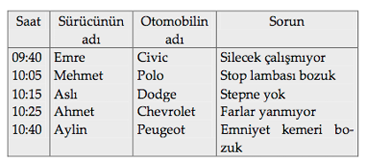

MANTIK BİLMECESİ-2
Bir trafik denetiminde durdurulan beş değişik otomobilin, saat kaçta durdurulduklarını, otomobilin markasını, sürücünün adını ve otomobilin neyinin bozuk olduğunu bulunuz.
İpuçları
1. İki bayanın kullandığı otomobil peş peşe durdurulmadı.
2. Ahmet, stepnesi olmayan otomobilden hemen sonra durduruldu, fakat trafik denetimi Peugeot’dan önceydi.
3. Mehmet’in ışıklarından biri yanmıyordu; onun otomobili Aslı’nın otomobilinden 10 dakika önce durduruldu. Aslı’nın otomobili Chevrolet değildi.
4. Dodge, stop lambalarından yalnızca biri çalışan otomobilden daha sonra durduruldu. Sileceklerinden biri çalışmayan otomobil Polo’dan daha önce denetimden geçirildi.
5. Stepnesi olan Chevrolet, Civic’ten daha sonra durduruldu, fakat hemen değil. Civic’in şoförü erkekti.
6. Aylin’in ışıklarla ilgili bir problemi yoktu.
Cevap:
